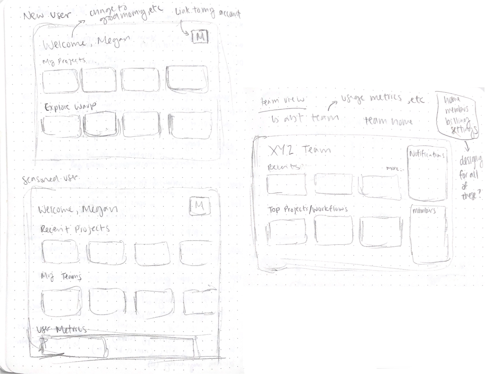

Early Sketching
We first created sketches to explore different layouts for the screen and modules (components on the screen).





Design Decisions
Based on the initial sketches, the following focues were implemented into our wireframes:
- focus on intiutiveness with inspiration from Figma Home, Google Drive and GitHub home
- centralize live sessions, user metrics, activity, and educational content with use of a sidebar
- considertation of user states (both new and active users)
- focus on customizability
- split up team and personal funcitonality